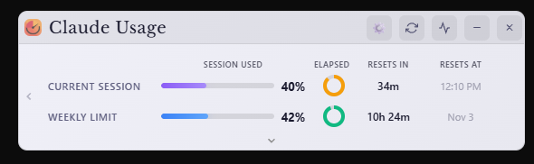
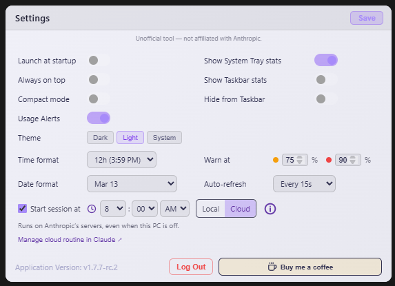
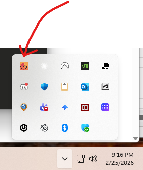
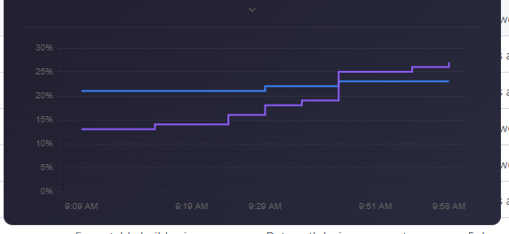

공식 설치 문서 기준. 클로드 구독(Pro·Max·Team)의 5시간 한도와 주간 한도를 막대 두 개로 늘 띄워 두는 무료 오픈소스 앱(MIT)이에요. 다시 차기까지 남은 시간과 차는 시각, 75%·90% 넘을 때 색과 알림, 정한 시각에 5시간 창을 미리 시작하는 예약까지 돼요. 윈도·맥·리눅스 다 돼요.

github.com/SlavomirDurej/claude-usage-widget → 오른쪽 Releases에서 가장 위 버전을 열어요. 윈도는 …-win-Setup.exe(설치형) 또는 …-win-portable.exe(설치 없이 바로), 맥은 Apple 칩이면 …-macOS-arm64.dmg·인텔이면 …-macOS-x64.dmg, 리눅스는 …-linux-x86_64.AppImage.
앱을 열고 'Login to Claude'를 누르면 앱 안에 클로드 로그인 창이 떠요. 평소처럼 로그인하면 끝 — 위젯이 로그인 정보를 내 컴퓨터에 암호화해서 넣어 두고, 막대가 바로 떠요.
Current Session = 5시간 한도, Weekly Limit = 주간 한도(0~100%). 원 = 지금 창에서 지난 시간, Resets In = 다시 차기까지 남은 시간, Resets At = 다시 차는 시각. 막대는 보라(보통) → 주황(기본 75% 넘음) → 빨강(기본 90% 넘음). 요금제가 알려 주면 Sonnet·Opus 같은 모델별 줄도 생겨요.
톱니(설정)에서 Usage Alerts를 켜면 기준을 넘을 때 데스크톱 알림이 와요. Warn at 칸에서 주황·빨강 기준(%)을 바꾸고, Always on top을 켜면 다른 창 위에 늘 떠 있어요. Auto-refresh로 새로고침 간격(기본 5분)도 바꿔요.

설정에서 Show System Tray stats를 켜면 시계 옆 트레이 아이콘 두 개에 5시간·주간 %가 숫자로 떠요. Hide from Taskbar까지 켜면 창 없이 트레이로만. Show Taskbar stats는 작업 표시줄 아이콘을 좌우로 나눠 % 를 띄워요(기본 꺼짐).

설정 맨 아래 Start session at에 시각을 고르고 Local 또는 Cloud를 골라 Save. 그 시각에 하이쿠 모델로 아주 짧은 계산 질문을 보내서 5시간 창을 그때 시작해요. 7시로 두면 12시에 다시 차서, 9시에 일을 시작해 막혀도 12시면 다시 써요. Local은 컴퓨터와 위젯이 켜져 있어야 하고, Cloud는 앤트로픽 Routines로 돌아서 컴퓨터가 꺼져 있어도 돼요(Routines가 되는 계정만).
위젯 위 그래프 버튼을 누르면 5시간·주간 사용량이 시간에 따라 어떻게 올랐는지 7일 그래프로 나와요. 내가 언제 몰아 쓰는지 보여요.

브라우저 주소창
https://github.com/SlavomirDurej/claude-usage-widget/releases/latest
Win+R 창
shell:startup
맥 터미널
xattr -cr /Applications/Claude Usage Widget.app
리눅스 터미널, 받은 폴더
chmod +x Claude-Usage-Widget-*.AppImage
실행 명령 뒤에 붙임
--profile=work
도움이 되셨다면
@ai.antenna.kr
에서 바로 쓰는 AI 활용법을 계속 올립니다.